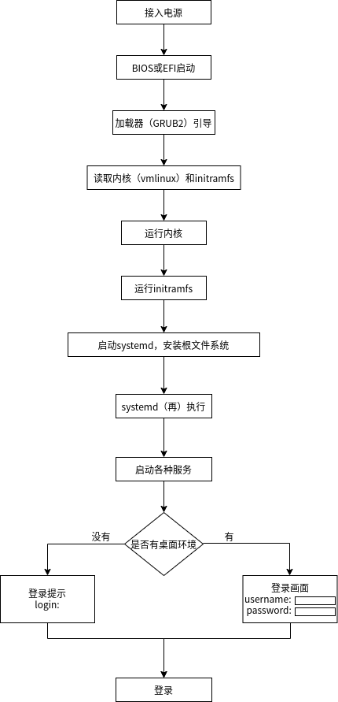
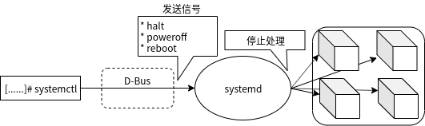

第二章 Linux的启动和停止¶
2.1 了解引导顺序¶
引导顺序简介¶
启动系统的运行过程称为引导（Boot）。
而引导顺序是指，从接通电源到显示登录画面或登录命令界面为止，内核的初期设定、文件系统的安装、系统的各种管理程序（守护进程）的启动、网络的配置等。它是OS运行所需的所有设定的一系列流程。
因此，理解引导顺序也可以更深入的理解OS，而且在系统发生故障时对特定原因进行处理也是非常有帮助的。
BIOS/UEFI¶
PC接入电源后，BIOS或UEFI读取Linux的GRUB2引导加载器并启动。
这几年几乎所有PC都采用了UEFI，BOIS和UEFI在GRUB2启动后的处理过程是不相同的。
BIOS
BIOS(Basic Input/Output System)是编入并存储在PC硬件的非易失性存储器（NVRAM：Non-Volatile RAM）中的程序（固件）。打开PC的电源后，BIOS按照设定的设备的先后顺序，检索位于磁盘扇区最前端的MBR（Master Boot Record）中的引导加载器，并启动第一个检索到的程序。
UEFI
EFI(Extensible Firmware Interface)是BIOS的标准固件，但其扩展了功能，包括支持高容量磁盘（GPT: GUID Partition Table）、强化安全性（Secure Boot）、通过网络进行远程诊断等。它由Intel公司开发，现在被Unified EFI Forum管理。名称也变更为UEFI(Unified Extensible Firmware Interface)，但UEFI和EFI可以理解为具有相同含义的词汇。
从UEFI引导OS时，按照设定再NVRAM中先后顺序，启动存储在磁盘中的EFI分区（EFI System Partition）中的引导加载程序。这一点与启动MBR内的引导加载程序的BIOS的方式不同。
Secure Boot
Secure Boot（安全引导）是通过编入UEFI的公钥，验证引导器中的数字证书来防止使用未经授权的程序（引导加载程序）启动的供应商的硬件。如果要使用安全引导，请在UEFI设置界面中启用安全引导设置。
因为Linux的引导加载器GURB2中嵌入了数字证书，所以它与安全引导具有相同功能。如果只是在正常情况下使用Linux，在UEFI设定界面中关闭Secure Boot也是完全没有问题的。
BIOS中启动器的先后顺序，或是UEFI中引导加载器的先后顺序，都可以在接入电源后通过BIOS或UEFI的设定界面中进行设定。
大多数型号的PC都可以在开机后按功能键F2进入设定界面。
引导加载程序¶
引导加载器可以将内核(vmlinux)和initramfs从磁盘加载到内存中，并调用其进行系统启动。
在近年来几乎在所有Linux发行版中，都采用GURB2作为引导加载器。GRUB2在UEFI和BIOS中都可以使用。
如下方启动界面中的信息所提示的那样，通过输入[e](Edit)键，可以编辑在内存中的grub.cfg文件，通过输入[c](command)键可以执行GRUB命令。
在下方示例中，展示了在BIOS环境中编辑CentOS内存中的grub.cfg文件，在没有桌面环境(multi-user目标)中启动（在EFI环境中行首命令“linux”为“linuxefi”）。
注解
在以linux开头的行的行尾添加数字“3”，指定以multi-user目标启动（配置完成后按下[Ctrl]+[x]组合键）。
在下方示例中，展示了在BIOS环境中编辑Ubuntu内存中的grub.cfg文件，在无桌面环境(multi-user目标)中启动。
注解
在以linux开头的行的行尾添加数字“3”，指定以multi-user目标启动（配置完成后按下[Ctrl]+[x]组合键）。
你可以在桌面环境中启动，或者在不使用桌面环境(multi-user目标)中启动，或者设置systemd的默认目标。综上所述，如果在GRUB2配置文件中指定，则可以修改先后顺序。
BIOS启动¶
GRUB2中包含了boot.img文件和core.img文件以及动态加载文件的多个模型。
GRUB2安装时boot.img被写入磁盘MBR扇区首部512字节中。同时，生成包含GRUB2的基础代码和/boot目录的文件系统模块（例如：xfs.mod）等的core.img，core.img写入MBR之后的扇区。
从BIOS中读取的boot.img导入core.img，core.img将放置于/boot/grub2/目录以下的模块(xx.mod)作为文件系统的文件进行读取，随后进行加载/链接。
EFI启动¶
GRUB2加载用FAT32或vfat格式化的EFI分区中EFI/centos/目录下的shim.efi文件和grubx64.efi文件。
这两个文件不是运行Linux的ELF，而是作为Microsoft Windows可执行文件的Portable Excutable（PE）。
shim.efi
EFI是参照引导入口调用的第一阶段的引导加载器。其安装了由Microsoft UEFI Signing Server签名的数字证书，支持安全引导功能。
grubx64.efi文件调用第二阶段的引导加载程序。
grubx64.efi
它是从第一阶段引导加载器shim.efi到调用的第二阶段的引导加载器。其加载grub.cfg文件并显示GRUB2引导界面。
根据grub.cfg配置将内核和initramfs加载到内存中，然后启动内核。如果要在不开启安全引导的情况下启动，您也可以直接从UEFI中调用grubx64.efi。
配置文件和目录¶
GRUB2的主要目录和配置文件如下所示： CentOS和Ubuntu的/boot目录下的GRUB2目录有所不同。
CentOS: /boot/grub2
Ubuntu: /boot/grub
下表介绍了CentOS的示例：/boot/grub2
目录和配置文件 |
BIOS |
UEFI |
说明 |
|---|---|---|---|
/boot/grub2/ |
○ |
○ |
配置文件和模块所在的目录 |
/boot/grub2/grub.cfg |
○ |
○ |
配置文件。grub2-install生成的/boot/efi/EFI/centos/grubx64.efi也参照此文件 |
/boot/grub2/i386-pc/ |
○ |
— |
此目录静态或动态链接到core.img的模块所在的目录。core.img也在此目录生成 |
/usr/lib/grub/i386-pc/ |
○ |
— |
模块所在的目录。在执行grub2-install命令时，在此目录下面的模块将复制到/boot/grub2/i386-pc/目录下 |
/boot/grub2/x86_64-efi/ |
— |
○ |
grubx64.efi中存放静态或动态链接的模块的目录。core.efi再此处生成并复制到/boot/efi/EFI/centos/grubx86.efi中 |
/usr/lib/grub/x86_64-efi/ |
— |
○ |
模块所在的目录。在执行grub2-install时，下面的模块将复制到/boot/grub2/x86_64-efi/目录下 |
/boot/efi/EFI/centos/ |
— |
○ |
配置文件和引导加载程序所在的目录 |
/boot/efi/EFI/centos/grub.cfg |
— |
○ |
配置文件。从grub2-efi安装包中安装的/boot/efi/centos/grubx64.efi |
/etc/grub.d/ |
○ |
○ |
设定了配置文件grub.cfg生成时执行的脚本的数据库。其目录下的shell脚本参照/etc/default/grub文件中的变量进行设定，生成grub.cfg在下面的章节中进行讲解 |
/etc/default/grub |
○ |
○ |
在生成配置文件grub.cfg时，设定从/etc/grub.d/下的脚本引用的变量的值 |
grub.cfg的设定用于GRUB2执行命令的参数。主要的GRUB2命令如下表所示:
GRUB2命令（CentOS） |
GRUB2命令（Ubuntu） |
BIOS |
UEFI |
说明 |
|---|---|---|---|---|
insmod |
insmod |
○ |
○ |
模块的动态加载 |
set |
set |
○ |
○ |
参数的设定 |
linux |
linux |
○ |
○ |
以16位后路模式启动Intel架构的内核。内核随后转换为保护模式 |
initrd |
initrd |
○ |
○ |
在使用linux命令启动内核时，指定内核使用initramfs |
linuxefi |
— |
— |
○ |
将UEFI参数传递到内核，启动内核 |
initrdefi |
— |
— |
○ |
用linuxefi命令启动内核时，指定内核使用initramfs |
下面是以BIOS环境下的CentOS的grub.cfg文件为例:
...省略...
### BEGIN /etc/grub.d/10_linux ###
insmod part_msdos
insmod ext2
set root='hd0,msdos1'
if [ x$feature_platform_search_hint = xy ]; then
search --no-floppy --fs-uuid --set=root --hint-bios=hd0,msdos1 --hint-efi=hd0,msdos1 --hint-baremetal=ahci0,msdos1 --hint='hd0,msdos1' 39577ee2-6cb9-49e7-914c-92a0bd7a292d
else
search --no-floppy --fs-uuid --set=root 39577ee2-6cb9-49e7-914c-92a0bd7a292d
fi
...省略...
下面是以UEFI环境下的CentOS的grub.cfg文件为例:
...省略...
### BEGIN /etc/grub.d/10_linux ###
insmod part_gpt
insmod ext2
set root='hd0,gpt2'
if [ x$feature_platform_search_hint = xy ]; then
search --no-floppy --fs-uuid --set=root --hint-bios=hd0,gpt2 --hint-efi=hd0,gpt2 --hint-baremetal=ahci0,gpt2 b66a06d8-fa55-4365-8eeb-186d8486026c
else
search --no-floppy --fs-uuid --set=root b66a06d8-fa55-4365-8eeb-186d8486026c
fi
...省略...
下面是以UEFI环境下的CentOS的grub.cfg文件为例:
...省略...
### BEGIN /etc/grub.d/20_memtest86+ ###
menuentry 'Memory test (memtest86+)' {
insmod part_msdos
insmod ext2
set root='hd0,msdos1'
if [ x$feature_platform_search_hint = xy ]; then
search --no-floppy --fs-uuid --set=root --hint-bios=hd0,msdos1 --hint-efi=hd0,msdos1 --hint-baremetal=ahci0,msdos1 fcdd3141-61c0-4969-bac5-26ed9ceb97bc
else
search --no-floppy --fs-uuid --set=root fcdd3141-61c0-4969-bac5-26ed9ceb97bc
fi
knetbsd /boot/memtest86+.elf
}
...省略...
grub2-mkconfig/grub-mkconfig命令¶
grub2-mkconfig是用于生成CentOS配置文件grub.cfg的命令，grub-mkconfig是用于生成Ubuntu配置文件grub.cfg的命令。
在没有自定义变量的情况下执行grub2-mkconfig或grub-mkconfig时，此命令会将生成配置文件的内容打印在屏幕中（标准输出）。为了保存grub.cfg配置文件，使用“>”右尖括号符号将打印的内容重定向到文件中。
CentOS：
grub2-mkconfig > grub.cfgUbuntu：
grub-mkconfig > grub.cfg
# cd /boot/grub2/
# cp grub.cfg grub.cfg.back ➜ 为了慎重起见，先把当前文件做备份
# grub2-mkconfig > grub.cfg
Generating grub configuration file ...
done
$ cd /boot/grub/
$ sudo cp grub.cfg grub.cfg.back ➜ 为了慎重起见，先把当前文件做备份
$ sudo grub-mkconfig | sudo tee grub.cfg
或者您也可以通过参数“-o”指定并执行输出到文件。
CentOS：
grub2-mkconfig -o grub.cfgUbuntu：
grub-mkconfig -o grub.cfg
在生成的配置文件grub.cfg中，配置编号从“0”开始，但是请注意，配置文件grub.cfg中的分区编号是从“1”开始，而不是从“0”开始。
如果因为配置文件grub.cfg丢失而引起Linux系统无法启动的故障的情况下，可以从DVD或CD-ROM中以读写模式启动并执行grub2-mkconfig或grub-mkconfig命令生成配置文件grub.cfg。
grub2-mkconfig和grub-mkconfig命令从/etc/grub.d/目录下的shell脚本获取配置。每个shell脚本引用/etc/default/grub文件以生成配置文件grub.cfg中各部分的内容。
以下是位于CentOS中/etc/grub.d/目录下的shell脚本。Ubuntu与之相同。
“10_linux”生成当前内核的启动行和initramfs的相关内容。
“30_os-prober”生成在磁盘中查找并安装操作系统的的相关内容。
# ls -F /etc/grub.d/
00_header* 01_menu_auto_hide* 10_linux* 20_ppc_terminfo* 30_uefi-firmware* 41_custom*
00_tuned* 01_users* 20_linux_xen* 30_os-prober* 40_custom* README
注解
关于命令行示例中使用的“cd”、“cp”、“ls”等Linux命令，在随后的章节中会做详细介绍。另外，本书中使用CentOS和Ubuntu在配置上基本是相通的，所以更多使用CentOS做为示例。
内核¶
内核在系统启动时被加载到内存中，然后其常驻内存管理CPU和内存等系统资源并控制设备，调度进程等。内核为操作系统提供的基本功能，它决定了系统的功能与性能、并赋予Linux系统特征，它就是操作系统的核心程序。
内核的构成如下所示：
进程管理、用户管理、时钟管理、内存管理等主要部分
编译时静态链接到硬件的内核模块
编译时不链接到硬件，在系统启动时或启动后，在必要时读取并动态态链接到被硬件需要的内核模块
可加载内核模块(Loadable Kernel Module)，可动态加载（loadable）从这个词义上来说，它的名字是这样的，其缩写为LKM。内核加载模块（Kernel Loadable Module）其缩写为KLM，或者被称为内核模块。
内核在/boot目录下存放，文件名称为“vmlinux-version”，此文件为gzip压缩文件。
不同类型的可加载内核模块存放在/lib/modules/version/kernel目录下的子目录。
引导顺序中内核的处理过程¶
存储器中的内核在自动解压缩后由引导加载器GRUB2加载并执行内核中的初始化操作，其后内核解压缩并展开initramfs使其在内存中加载并运行，最后再运行systemd。
内核中的初始化操作
内核在启动时对自己进行以下初始化操作：
初始化分页机制
初始化调度程序
初始化计时器
初始化中断机制
initramfs执行
initramfs(Inital RAM FS)是将磁盘中的根文件系统装载到根“/”、在引导时加载到内存中的袖珍文件系统。
它创建配置包含了磁盘设备驱动和文件系统模块的目录，用于访问创建在磁盘中的根文件系统。它是一个gzip压缩文件，可以使用cpio将其归档。他也被称为initrd（Initial RAM Disk）初始RAM磁盘。
initramfs文件在/boot目录下名为“initramfs-version”(CentOS)，或者名为“initrd.img-version”（Ubuntu）。
内核使用initramfs执行以下操作：
将部署在内存中的initramfs加载为临时根文件系统
启动initramfs中的init(systemd)程序，通过各种服务安装磁盘内的根文件系统
将根文件系统从initramfs切换到磁盘中的根文件系统
注解
有关cpio和gzip的相关信息，请参考第六章。
systemd再执行
内核重新运行磁盘中的根文件系统的/sbin/init程序。然后链接/sbin/init/lib/systemd/systemd程序服务，所以systemd被再次执行。
systemd¶
systemd是内核生成的第一个用户进程，所以进程编号（PID）为“1”。
systemd根据配置文件，开始按照启动顺序依次启动，建立系统用户图形界面目标（graphical.target）或多用户目标（multi-user.target）。我们能占用哪个目标呢？只有默认目标(default.target)可以在配置中指定。
在图形界面目标（graphical.target）的场景下，可以显示图形登录界面，登录桌面环境。
在多用户目标（multi-user.target）的场景下，将会显示登录命令行界面，登录到没有桌面环境的CUI环境中。
目标(target)定义系统的状态，比如提供什么样的服务。systemd与早前Linux系统中使用的 SysV init功能相同。
除了graphical.target和multi-user.target之外，还有用于维护系统的rescue目标（rescue.target）等其他多种目标。另外也有停止和重启系统的目标，于此我们在后面的章节再进行讲解。
目标 |
说明 |
SysV级别 |
|---|---|---|
default.target |
系统启动时的默认目标，系统在这个目标中启动，通常指向multi-user.target或graphical.target的链接 |
— |
sysinit.target |
进行系统启动时初期阶段设置目标 |
— |
rescue.target |
发生故障时或维护时管理者使用的目标。管理员输入root密码进行登录，然后进行维护工作 |
1 |
basic.target |
在系统启动时进行基本设定的目标 |
— |
multi.target |
基于字符命令的多用户的目标 |
3 |
graphical.target |
设置图形界面的目标 |
5 |
在系统启动完成的阶段，会产生很多进程，systemd是在所有进程的结构中的根(root)。
注意
SysV init所使用的运行级别是定义运行时服务的状态（级别：run）的术语。运行级别“0”为停止系统，运行级别“3”（multi-user target）为字符终端登录，运行级别“5”（graphical target）为GUI图形界面登录，所有运行级别在systemd中都可以找到相对应的目标。
查看和设置默认目标¶
通过systemd命令可以查看那些目标被设置在default.target上，或更改default.target的设置。
下面是使用systemctl的子命令get-default显示默认目标或使用子命令set-default更改默认目标的示例：
# systemctl get-default ➜ 查看默认目标
graphical.target
# systemctl set-default multi-user.target ➜ 更改默认目标为字符终端登录
Removed /etc/systemd/system/default.target.
Created symlink /etc/systemd/system/default.target → /usr/lib/systemd/system/multi-user.target.
# systemctl get-default ➜ 查看默认目标
multi-user.target
在引导加载程序GRUB2界面中指定目标¶
在引导加载程序的内核命令选项systemd.unit中，您也可以指定``systemd.unit=multi.target``。
或者，通过在内核命令行行尾添加运行级别“3”，也可以指定运行级别。通常在这种配置的情况下，此处的default.target的连接符号优先生效。
运行状态下目标的变更¶
使用systemctl命令的子命令isolate可以将当前正在运行的目标变更为另一个目标，执行init命令也同样生效。
变更目标 |
systemctl isolate命令 |
init命令 |
|---|---|---|
变更为graphical.targer |
systemctl isolate graphical.target |
init 5 |
变更为multi-user.targer |
systemctl isolate multi-user.target |
init 3 |
变更为rescue.targer |
systemctl isolate rescue.target |
init 1 |
登录¶
当系统引导完成后，窗口将会显示登录界面或字符登录提示。在此输入用户名和密码进行登录。
下面展示在救援目标，多用户目标和图形目标上启动时每个界面的显示的示例。
以下是CentOS中的救援目标的登录界面。
Welcome to rescue model Type "systemctl default" or ^D to enter default mode.
the "journalctl -xb" to view system logs. Type "systemctl reboot" to reboot.
Give root password for maintenance
(or type Control-D to continue): ➜ 在这里输入root密码
以下是CentOS中的救援目标的登录界面。
You are in rescue mode. After logging in, type "journalctl -xb" to view
system logs. "systemctl reboot" to reboot, "systemctl default" ro "exit"
to boot into default mode.
Give root password for maintenance
(or type Control-D to continue): ➜ 在这里输入root密码
在上述的界面中，输入root的密码进行登录。
下面是再多用户目标（没有桌面环境）下启动CentOS时显示的界面的示例。
CentOS Linux 8 (Core)
Kernel 4.18.0-80.11.2.el8_0.x86_64 on an x86_64
Activate the web console with: systemctl enable --now cockpit.socket
centos login: ➜ 在此输入用户名登录
下面是再多用户目标（没有桌面环境）下启动Ubuntu时显示的界面的示例。
Ubuntu 18.04.3 LTS ubuntu tty1
ubuntu login: ➜ 在此输入用户名登录
以下是以图形界面目标启动CentOS或Ubuntu时默认情况下的示例（CentOS和Ubuntu中登录界面是相同的）。
在shell中的操作¶
登录后，在图形目标的情况下会显示图形界面桌面环境。在多用户目标和救援目标情况下，会显示基于shell的命令行提示符。
如果需要在桌面环境中执行Linux命令，请启动虚拟终端。如果没有桌面环境，请直接再shell命令提示符下执行命令。
下面是再没有桌面环境的CUI界面中，以“centos”用户作为登录用户的示例。登录后运行了以下命令：
whoami：查看当前用户名
pwd：查看当前所在目录路径
2.2 了解shell的使用¶
shell¶
shell是linux内核与用户关联的用户界面。它解释用户输入的命令，请求内核执行并将结果返回给用户。shell也被称为命令解释器，因为它可以逐个接收并解释用户的指令。Linux的标准shell是bash，但是也可以使用其他shell。

shell显示用户对命令的输入与输出。
在以下的示例中，将显示在bash shell的命令提示符“$”下运行“ls”命令，“ls”命令显示用户在当前的目录下的文件列表。打印出“file A”与“file B”两个文件的内容作为“ls”命令的执行结果。

内部命令和外部命令¶
对于在命令提示符中输入的命令，可以分为外部命令和内部命令。
内部命令
是编译入shell内部的指令，如“cd”、“echo”等都是内部命令。
外部命令
不在shell内部，而是放在/usr/bin，/usr/sbin等目录下的命令。

shell在shell的环境变量PATH注册的路径下寻找并运行外部命令。因为内部命令是shell内部的命令，所以不按照环境变量PATH即可执行。下面对设定PATH环境变量（下面的示例中/usr/bin与/usr/sbin目录被PATH环境变量注册）举例。
PATH=/usr/bin:/usr/sbin
因此，当您执行未注册在环境变量中的路径下的命令时，会提示“没有找到命令”（简体中文）或“command not found”（英文）。但是，您也使用绝对路径或相对路径“./”来执行指定的命令。
shell变量和环境变量¶
在shell中有很多环境变量，常见有注册了外部命令的目录的PATH环境变量，显示语言环境是简体中文还是英文的LANG语言环境变量等。如果用户输入环境变量的值，则shell会变更该环境变量。
shell涉及到的变量有两种：shell变量和环境变量。
shell变量
仅使用shell设置的变量，子进程不继承。
环境变量
在shell外使用的和在外部命令中所使用的变量称为环境变量。子进程继承环境变量。我们可以将shell变量声明为环境变量。
通过export命令可以打印出环境变量中特别声明的指定参数。因此，子进程被设置为继承环境变量。由于启动的程序的子进程继承环境变量，所以我们可以从应用程序中使用环境变量。
下图通过从bash中运行data的命令的示例来讲解在date子进程中环境变量与shell变量之间的关系与变化。data命令的子进程继承bash环境变量PATH和LANG，但不会继承shell变量的PS1，而不是环境变量。
由于环境变量是通过输出shell变量来制作的，预先提供的变量有很多是重复的。下面列出了主要shell变量：
变量名称 |
说明 |
|---|---|
PATH |
命令检索路径 |
HOME |
用户的家目录 |
PS1 |
定义命令提示符 |
LANG |
语言 |
通过使用 shell_name=value 可以定义shell变量的值。使用 $shell_name 或 ${shell_name} 查看有关值的设定。使用“unset”命令可以删除shell变量。
以下是通过LANG的环境变量来切换语言环境（简体中文/英文）的示例：
# echo $LANG ➜ 打印出shell变量LANG的值
zh_CN.UTF-8
# date ➜ 现在的语言是zh_CN.UTF-8，显示的时间是中文字体
2019年 11月 26日 星期二 17:16:29 CST
# LANG=en_US.UTF-8 ➜ 指定环境变量的值为en_US.UTF-8,也是就是中文字体
# echo $LANG ➜ 打印出shell变量LANG的值
en_US.UTF-8
# date ➜ 再次查看系统时间，这次打印出的时间是英文字体
Tue Nov 26 17:16:50 CST 2019
# LANG=zh_CN.UTF-8 ➜ 指定变量LANG的值为zh_CN.UTF-8，也就是中文字体
# echo $LANG ➜ 打印出shell变量的LANG的值
zh_CN.UTF-8
# date ➜ 刚才设定的变量LANG已经生效
2019年 11月 26日 星期二 17:16:29 CST
如果要打印在现在的shell中定义的shell变量的列表，可以使用不加任何指定参数的“set”命令。如果要显示环境变量，则使用“env”命令或是“printenv”命令。
# export LINUX="CentOS8" ➜ 指定环境变量
# env
...忽略...
HOSTNAME=centos.localdomain
LINUX=CentOS8 ➜ 显示指定的环境变量
USER=root
PWD=/root
HOME=/root
...忽略...
除此之外，在bash中，shell变量“PS1”被默认定义为命令提示符，“PS1”的缺省配置为 ['\s-\v\$ '] 。在值为 ['\s-\v\$ '] 的情况下，如下表所示，\s 的缺省值为“bash”，\v 的缺省值为当前bash的版本，最终显示为 [bash-4.2$ ]。
在普通用户的命令提示符中“PS1”的值中一般有“$”，如果是root用户（系统管理员），则显示为“#”。
标示 |
说明 |
|---|---|
\s |
shell的名称 |
\v |
bash的版本 |
\u |
用户名 |
\h |
第一个“.”前的主机名 |
\w |
当前工作目录 |
注解
我们可以自定义命令提示符的显示内容，详细配置可以参照第三章。
2.3 使用systemctl管理服务¶
如何管理服务¶
系统启动时的系统设置和服务管理都由systemd进行。
系统引导完成后，systemctl命令可以通过D-Bus(Desktop Bus)向系统发送消息，以执行服务启动（start）或停止（stop）等管理。
D-Bus是一种消息总线，它并行处理多个进程之间的通讯。systemd除了使用D-Bus进行通讯之外，也用于桌面应用程序之间的通讯。
systemd的配置文件在CentOS中的安装位置位于 /usr/lib/systemd/system 和 /etc/systemd/system 目录下（对于CentOS，/lib 是 /usr/lib 的软链接）。因此，您也可以通过访问 /lib/systemd/system 查看systemd的配置文件。
在Ubuntu系统环境下，systemd配置文件存放在 /lib/systemd/system 和 /etc/systemd/system 目录中。
通过执行systemctl命令，您可以查看和变更systemd配置（请参考下一节）。如果变更配置，则变更将在 /etc/systemd/system 目录中的文件生效。/etc/systemd/system 比 /lib/systemd/system 目录中的配置文件更优先生效。
使用systemctl命令管理服务¶
systemd通过单元（unit）来管理系统。单元有12中类型，服务（service）也是其中一种类型。在其他单元类型中，有在本书上一节中介绍的用于组合多个单元的目标（target）和存储设备的挂载（mount）等。
单元 |
说明 |
|---|---|
service |
服务的启动和停止 |
socket |
用于接收服务启动的套接字 |
device |
用于服务启动的设备检测 |
mount |
安装文件系统 |
automount |
自动安装文件系统 |
swap |
设置交换分区 |
target |
单元的组合 |
注解
socket是进程之间进行通讯的方式之一。关于交换分区的信息，请参考第七章。
以下是显示所有活动单元的示例，如服务和目标等：
# systemctl list-units | more
UNIT LOA
D ACTIVE SUB DESCRIPTION
proc-sys-fs-binfmt_misc.automount loa
ded active waiting Arbitrary Executable File Formats File System Automount Point
sys-devices-pci0000:00-0000:00:11.0-0000:02:03.0-ata3-host3-target3:0:0-3:0:0:0-block-sr0.device loa
ded active plugged VMware_Virtual_SATA_CDRW_Drive CentOS-8-BaseOS-x86_64
sys-devices-pci0000:00-0000:00:15.0-0000:03:00.0-host0-target0:0:0-0:0:0:0-block-sda-sda1.device loa
ded active plugged Virtual_disk EFI\x20System\x20Partition
sys-devices-pci0000:00-0000:00:15.0-0000:03:00.0-host0-target0:0:0-0:0:0:0-block-sda-sda2.device loa
ded active plugged Virtual_disk 2
sys-devices-pci0000:00-0000:00:15.0-0000:03:00.0-host0-target0:0:0-0:0:0:0-block-sda-sda3.device loa
ded active plugged LVM PV qdGEqL-yaNd-l5kw-7JbO-GUgr-34Rl-d76vDs on /dev/sda3 3
sys-devices-pci0000:00-0000:00:15.0-0000:03:00.0-host0-target0:0:0-0:0:0:0-block-sda.device loa
ded active plugged Virtual_disk
sys-devices-pci0000:00-0000:00:16.0-0000:0b:00.0-net-ens192.device loa
ded active plugged VMXNET3 Ethernet Controller
sys-devices-platform-serial8250-tty-ttyS0.device loa
ded active plugged /sys/devices/platform/serial8250/tty/ttyS0
sys-devices-platform-serial8250-tty-ttyS1.device loa
ded active plugged /sys/devices/platform/serial8250/tty/ttyS1
sys-devices-platform-serial8250-tty-ttyS2.device
...省略...
LOAD = Reflects whether the unit definition was properly loaded.
ACTIVE = The high-level unit activation state, i.e. generalization of SUB.
SUB = The low-level unit activation state, values depend on unit type.
147 loaded units listed. Pass --all to see loaded but inactive units, too.
To show all installed unit files use 'systemctl list-unit-files'.
使用systemctl命令的子命令可以修改服务的启动、停止等状态。
systemctl <server_status> <service_name>
主要的子命令如下所示：
子命令 |
说明 |
|---|---|
start |
启动（激活）单元 |
restart |
重启单元 |
stop |
停止单元 |
status |
查看单元状态 |
enable |
开机启动单元 |
disable |
关闭开机启动单元 |
isolate |
切换目标时，默认不关闭前一个目标启动的进程，isolate子命令改变这种行为，关闭前一个目标里面所有不属于后一个目标的进程 |
list-units |
显示被激活的所有单元，（子命令省略时，此子命令为默认） |
通过systemctl命令管理的主要服务如下：
服务 |
说明 |
|---|---|
udisks2 |
磁盘自动挂载服务 |
gdm |
GDM显示管理器 |
lightdm |
LightDM显示管理器 |
NetworkManager |
NetworkManager服务 |
sshd |
SSH服务 |
postfix |
Postfix邮件服务 |
httpd |
HTTP Web服务 |
以下是一个管理启动、停止服务的示例。比如启动、停止httpd（Apache Web服务器）。对于其他服务，如NetworkManager、sshd、postfix也可以使用相同方式进行管理。
# systemctl status httpd ➜ 查看httpd服务状态
● httpd.service - The Apache HTTP Server
Loaded: loaded (/usr/lib/systemd/system/httpd.service; disabled; vendor preset: disabled) ➜ ①
Active: inactive (dead) ➜ ②
Docs: man:httpd.service(8)
# systemctl start httpd ➜ 启动httpd服务
# systemctl status httpd ➜ 查看httpd服务状态
● httpd.service - The Apache HTTP Server
Loaded: loaded (/usr/lib/systemd/system/httpd.service; disabled; vendor preset: disabled) ➜ ③
Active: active (running) since Wed 2019-11-27 19:05:35 CST; 16s ago ➜ ④
Docs: man:httpd.service(8)
Main PID: 10818 (httpd)
Status: "Running, listening on: port 80"
Tasks: 213 (limit: 23630)
Memory: 47.4M
CGroup: /system.slice/httpd.service
├─10818 /usr/sbin/httpd -DFOREGROUND
├─11131 /usr/sbin/httpd -DFOREGROUND
├─11132 /usr/sbin/httpd -DFOREGROUND
├─11133 /usr/sbin/httpd -DFOREGROUND
└─11134 /usr/sbin/httpd -DFOREGROUND
...忽略...
# systemctl enable httpd
Created symlink /etc/systemd/system/multi-user.target.wants/httpd.service → /usr/lib/systemd/system/httpd.service. ➜ ⑤
# systemctl status httpd
● httpd.service - The Apache HTTP Server
Loaded: loaded (/usr/lib/systemd/system/httpd.service; enabled; vendor preset: disabled) ➜ ⑥
Active: active (running) since Wed 2019-11-27 19:05:35 CST; 35s ago
Docs: man:httpd.service(8)
Main PID: 10818 (httpd)
Status: "Running, listening on: port 80"
...忽略...
①disabled禁用
②inactive没有启动
③disabled禁用
④active启动
⑤在multi-user.target.wants目录下创建了与httpd.service配置文件的软链接
⑥enabled启用
服务配置文件和选项¶
服务配置文件主要在 /etc/lib/systemd/system 目录下以 “服务名称.service” 的命名方式放置的。
根据服务配置文件的选项，可以指定要启动的服务程序和用于停止服务的方式。
选项 |
说明 |
|---|---|
ExecStart |
指定启动程序的命令加上必要的参数且使用绝对路径。例如httpd.service，ExecStart=/usr/bin/httpd $OPTIONS -DFOREGROUND |
ExecReload |
在绝对路径中指定用于重新加载配置文件的命令。例如httpd.service，ExecReload=/usr/sbin/httpd $OPTIONS -k graceful |
ExecStop |
指定停止程序的命令加上必要的参数且使用绝对路径。例如httpd.service，ExecStop=/bin/kill -WINCH ${MAINPID} |
# cat /lib/systemd/system/httpd.service
...省略...
[Unit]
Description=The Apache HTTP Server
Wants=httpd-init.service
After=network.target remote-fs.target nss-lookup.target httpd-init.service
Documentation=man:httpd.service(8)
[Service]
Type=notify
Environment=LANG=C
ExecStart=/usr/sbin/httpd $OPTIONS -DFOREGROUND
ExecReload=/usr/sbin/httpd $OPTIONS -k graceful
# Send SIGWINCH for graceful stop
KillSignal=SIGWINCH
KillMode=mixed
PrivateTmp=true
[Install]
WantedBy=multi-user.target
WantedBy=multi-user.target 指定的含义是，当使用systemctl命令的enable子命令将httpd.service服务设为开机启动时，httpd.service配置文件将会软连接到 /etc/systemd/systemd/multi-user.target.wants 目录下。执行子命令disable软连接将会被删除。
systemctl命令中无法更改配置的重要服务¶
在systemd启动系统之前的初期阶段启动的两个服务是sysinit.target和systemd-journald.service，另外在multi-user.target之前启动的服务是logind.service。
注解
关于sysinit.target和multi-user.target的执行时机，请参考本章的“systemd”。
# ps -ef | grep -e journald -e udevd -e logind
root 744 1 0 11月26 ? 00:00:00 /usr/lib/systemd/systemd-journald
root 780 1 0 11月26 ? 00:00:00 /usr/lib/systemd/systemd-udevd
root 1009 1 0 11月26 ? 00:00:00 /usr/lib/systemd/systemd-logind
注解
systemd-journald.service参考本书第六章。
systemd-udevd服务¶
systemd-udevd.service服务是一个用于动态创建和删除/dev目录下的用于访问设备的链接文件的服务。
内核在系统启动时或运行时，将检测到的链接或阻断的设备反映再/sys目录下的设备信息文件中，并将uevent的信息发送给system-udevd服务。
systemd-udevd守护进程在收到uevent时获取/sys目录下的设备信息，删除/etc/udev/rules.d和/lib/udev/rules.d目录下的.rules文件中描述设备创建规则在/dev目录下创建设备文件。
此机制不要求管理员手动创建或删除设备文件。
注解
“守护进程”（daemon）用于在系统上持续运行，并为客户端提供服务和系统管理服务。守护进程包括一个称为服务器的守护程序，该守护程序将服务提供给客户端，例如httpd和sshd，它提供了一种守护进程，它提供了一种用于系统管理的服务，如udevd。许多守护进程在程序名的末尾带有表示守护进程的“d”。
/lib/udev/rules.d目录
包含描述默认UDEV规则的文件。如果要自定义规则，请编辑/etc/udev/rules.d目录下的文件，而不是该目录下的文件。
/etc/udev/rules.d目录
将部署描述定制的UDEV规则的文件。如果管理员要自定义UDEV规则，请编辑此目录下的文件。
systemd-logind服务¶
systemd-logind.service是管理用户登录的服务。跟踪用户会话，跟踪会话中生成的流程，基于PolicyKit的授权，以及对设备的访问权限，用于关闭、睡眠操作。PolicyKit是针对GNOME等图形环境下的操作，以/etc/polkit-1/rules.d/和/usr/share/polkit-1/rules.d/下的规则文件中定义的规则为基础进行认可的服务。PolicyKit的服务（polkit.service）由于polkitd守护进程提供。
以下是显示管理器为gdm时登录顺序的概略图。gdm参照systemd-logind守护进程，systemd-logind守护进程通过D-Bus参照从polkit.service（PolicyKit服务）启动的polkitd守护进程。
lightdm等其他显示管理器的情况也会使用类似的序列。
以下是以多用户模式（multi-user.target）启动时从虚拟终端（例如/dev/tty1）登录的序列。由于传统的序列（如agetty和login）在此序列中不会直接引用systemd-login服务。systemd-logind守护进程监视内核模拟文件系统/sys，以跟踪用户会话跟踪和会话中生成的进程。此外，在multi-user.target的情况下，polkit.service停止。

2.4 重新启动和停止系统¶
设置和服务分组的目标¶
目标系统设置和服务管理，包括挂载文件系统、启动网络、启动桌面环境以及启动Web服务器。
系统的重新启动和停止也是目标之一。
目标 |
说明 |
SysV级别 |
|---|---|---|
halt.target |
停止 |
— |
poweroff.target |
关闭电源 |
0 |
reboot.target |
重启 |
6 |
通过改变目标进行重启和停止¶
目标更改（如重新启动和停止系统）可通过systemctl命令完成。
您可以再参数中指定子命令和目标，以及仅指定子命令的方式。此外，您还可以使用比systemd早的SysVinit命令init、halt、poweroff和reboot。
操作 |
命令（指定目标） |
命令（仅使用子命令） |
SysV init 兼容命令 |
|---|---|---|---|
停止 |
systemctl isolate halt.target |
systemctl halt |
halt |
关闭电源 |
systemctl isolate poweroff.target |
systemctl poweroff |
poweroff、init 0 |
重启 |
systemctl isolate reboot.target |
systemctl reboot |
reboot、init 6 |
运行上述systemctl命令时，systemctl通过D-Bus想systemd发送消息“halt”、“poweroff”、“reboot”。接收到信息的systemd并列进行各单位的停止处理，在其中依赖关系的单元按照与启动时相反的顺序停止。
# systemctl halt
# systemctl poweroff
# systemctl reboot
除了systemctl命令之外，init命令等“SysV init”中提供的停止和管理再启动的命令，也可以在systemd的环境下以同样的方式使用。
init命令¶
init命令与以下介绍的其他停止/重启指令不同，是向systemd的同步链接。不通过D-Bus，直接执行systemd。
命令名作为“init”被启动，并且PID不是“1”的情况，init的符号前面的systemd，systemctl命令作为“init自变量”执行。通过在参数中指定级别“0”，可以通过指定电源关闭“6”进行重新启动。
# init 0 ➜ 关闭电源
# init 6 ➜ 重启
除init以外的SysV init兼容命令¶
systemd守护进程的符号链接的init以外，表2-4-3的命令全部/bin/systemctl命令的符号链接。
当调用指向符号链接的systemctl时，systemctl将确定调用的命令名称并进行处理。
命令 |
说明 |
|---|---|
shutdown |
停止计算机，关闭电源，重新启动 |
telinit |
更改运行级别 |
halt |
停止计算机 |
poweroff |
关闭计算机的电源 |
reboot |
重新启动计算机 |
runlevel |
显示前一个和现在的运行水平 |
关闭电源¶
通过shutdown命令，您可以关闭机器的电源。
shutdown [选项] [停止时间] [wall消息]
可以通过指定“-r”选项重新启动。
停止时间根据“hh:mm”的24小时形式的“时间:分钟”的指定，“m”从现在时刻开始的分单位的指定，“now”或“0”的即刻停止的指定。如果没有指定停止时间，则默认值为1分钟。
例① 10分钟后停止：shutdown +10
例② 即刻停止：shutdown +0 或 showdown now
例③ 1分钟后停止：shutdown 或 shutdown +1
指定停止时间时，systemd-shutdownd守护进程启动，进行系统停止的惊吓。5分钟以内的shutdown被调度后，自动制作/run/nologin hill，不能进行root以外的登录。
您还可以指定要发送到所有已登录的用户的wall信息。如果未指定任何消息，则会发送默认信息。
选项 |
说明 |
|---|---|
-H、–halt |
停止计算机 |
-P、–poweroff |
关闭计算机的电源（缺省） |
-r、–reboot |
重启计算机 |
-h |
与–poweroff相同，除非指定了–halt |
-k |
不执行halt、poweroff、reboot，只发送wall信息 |
–no-wall |
在halt、poweroff和reboot执行前不发送wall消息 |
-c |
取消关闭 |
下面的示例显示一条消息，表示一分钟后断电。连续运行date和shutdown命令，以确定命令运行时间和停止时间之间的间隔。
# date ; shutdown
2019年 11月 28日 星期四 18:29:28 CST
Shutdown scheduled for Thu 2019-11-28 18:30:28 CST, use 'shutdown -c' to cancel.
下面的示例中，由于即刻停止而不显示信息，立即停止，关闭电源。
# shutdown now
注解
如果连续运行多个命令，请使用“;”（分号）连接命令，如“date;shutdown”
关闭和重启计算机¶
halt命令进行计算机的停止，poweroff命令进行电源的关闭，reboot命令进行重启。
halt [参数]
poweroff [参数]
reboot [参数]
选项 |
说明 |
|---|---|
–halt |
halt、poweroff、reboot在任何情况下都关机 |
-p、–poweroff |
halt、poweroff、reboot在任何情况下都关闭电源 |
–reboot |
halt、poweroff、reboot在任何情况下都重启 |
-f、–force |
不调用systemd，立即执行 |
halt、poweroff和reboot命令都提供了-f选项。使用这个选项时，通过sync的运行可以保持文件系统的一致性，但是由于不执行位于systemd的停止顺序，所以有一部分数据丢失的危险。通常是应避免使用的选项，但希望再不等待每个服务结束的情况下立即停止系统的场景中使用。
sync(synchronize：取得同步)是将保存再内存中的文件系统数据的改写写到磁盘上的系统调用。也提供了执行sync系统调用的sync文字。
# reboot -f
Rebooting.
# halt -f
Halting.
# halt -fp
Powering off.
级别的表示和转移¶
runlevel命令显示前一个运行的级别和当前运行的级别。
# runlevel
3 5
上面示例中表示当前运行的运行级别为“5”，且之前的运行级别的级别为“3”。
telinit命令是在自定义变量中SysV运行级别，转移到指定的运行级别的画面。这是只为了兼容性而保留的命令。
telinit [选项] 运行级别
# telinit 0

{kind=link}
{kind=link}
{kind=link}
{kind=link}
{kind=link}
{kind=link}
{kind=link}